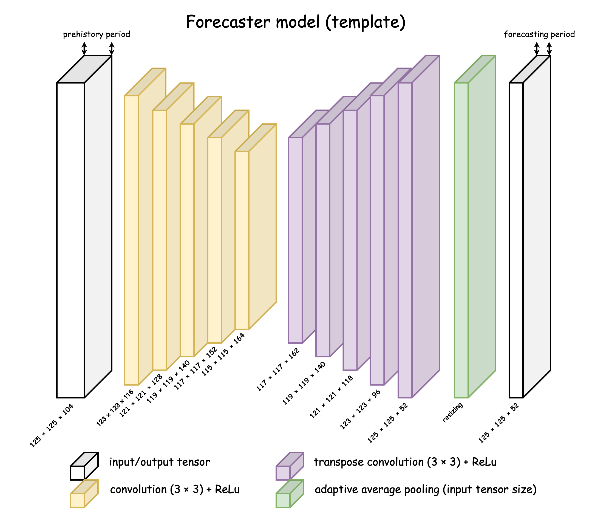

Module torchcnnbuilder.models
Classes
class ForecasterBase (input_size: Sequence[int], n_layers: int, in_time_points: int, out_time_points: int, conv_dim: int = 2, n_transpose_layers: Optional[int] = None, convolve_params: Optional[dict] = None, transpose_convolve_params: Optional[dict] = None, activation_function: torch.nn.modules.module.Module = ReLU(inplace=True), finish_activation_function: Union[torch.nn.modules.module.Module, ForwardRef(None), str] = None, normalization: Optional[str] = None, latent_shape: Optional[Sequence[int]] = None, latent_n_layers: int = 1, latent_activation_function: Union[torch.nn.modules.module.Module, ForwardRef(None), str] = None)-
A base class for CNN-based time series forecasting architectures. This class serves as a template for building time series prediction models with an encoder-decoder architecture.
Original source: article code.
Initializes the ForecasterBase with the encoder-decoder structure and specified layer parameters. See the model diagram below:

Args
input_size:Sequence[int]- The shape of the input tensor for one time point.
n_layers:int- The number of convolution layers in the encoder.
in_time_points:int- The number of time points (channels) in the input tensor (prehistory size).
out_time_points:int- The number of time points (channels) in the output tensor (forecasting size).
conv_dim:int- The dimension of the convolution operation (1, 2, or 3). If set to 2,
in_time_pointsis used as the number of channels. Default is 2. n_transpose_layers:Optional[int]- The number of transpose convolution layers in the decoder.
If None, uses the same value as
n_layers. Default is None. convolve_params:Optional[dict]- Parameters for convolution layers. If None, defaults to PyTorch’s default values. Default is None.
transpose_convolve_params:Optional[dict]- Parameters for transpose convolution layers. If None, defaults to PyTorch’s default values. Default is None.
activation_function:nn.Module- Activation function used in each layer. Default is
nn.ReLU(inplace=True). finish_activation_function:Union[Optional[nn.Module], str]- Final activation function. If 'same',
uses the same activation function as
activation_function. Default is None. normalization:Optional[str]- Type of normalization ('dropout', 'batchnorm', or 'instancenorm').
- Default is None.
latent_shape:Optional[Sequence[int]]- The shape of the latent space. If None, no latent space
- transformation is applied. Default is None.
latent_n_layers:int- Number of layers in the latent space transformation. Default is 1.
latent_activation_function:Union[Optional[nn.Module], str]- Activation function for latent space. If 'same', uses the same activation function as the model. Default is None.
Expand source code
class ForecasterBase(nn.Module): """ A base class for CNN-based time series forecasting architectures. This class serves as a template for building time series prediction models with an encoder-decoder architecture. Original source: [article code](https://github.com/ITMO-NSS-team/ice-concentration-prediction-paper?ysclid=lrhxbvsk8s328492826). """ def __init__( self, input_size: Sequence[int], n_layers: int, in_time_points: int, out_time_points: int, conv_dim: int = 2, n_transpose_layers: Optional[int] = None, convolve_params: Optional[dict] = None, transpose_convolve_params: Optional[dict] = None, activation_function: nn.Module = nn.ReLU(inplace=True), finish_activation_function: Union[Optional[nn.Module], str] = None, normalization: Optional[str] = None, latent_shape: Optional[Sequence[int]] = None, latent_n_layers: int = 1, latent_activation_function: Union[Optional[nn.Module], str] = None, ) -> None: """ Initializes the ForecasterBase with the encoder-decoder structure and specified layer parameters. See the model diagram below: .. image:: ../media/ForecasterBase.png Args: input_size (Sequence[int]): The shape of the input tensor for one time point. n_layers (int): The number of convolution layers in the encoder. in_time_points (int): The number of time points (channels) in the input tensor (prehistory size). out_time_points (int): The number of time points (channels) in the output tensor (forecasting size). conv_dim (int): The dimension of the convolution operation (1, 2, or 3). If set to 2, `in_time_points` is used as the number of channels. Default is 2. n_transpose_layers (Optional[int]): The number of transpose convolution layers in the decoder. If None, uses the same value as `n_layers`. Default is None. convolve_params (Optional[dict]): Parameters for convolution layers. If None, defaults to PyTorch’s default values. Default is None. transpose_convolve_params (Optional[dict]): Parameters for transpose convolution layers. If None, defaults to PyTorch’s default values. Default is None. activation_function (nn.Module): Activation function used in each layer. Default is `nn.ReLU(inplace=True)`. finish_activation_function (Union[Optional[nn.Module], str]): Final activation function. If 'same', uses the same activation function as `activation_function`. Default is None. normalization (Optional[str]): Type of normalization ('dropout', 'batchnorm', or 'instancenorm'). Default is None. latent_shape (Optional[Sequence[int]]): The shape of the latent space. If None, no latent space transformation is applied. Default is None. latent_n_layers (int): Number of layers in the latent space transformation. Default is 1. latent_activation_function (Union[Optional[nn.Module], str]): Activation function for latent space. If 'same', uses the same activation function as the model. Default is None. """ super(ForecasterBase, self).__init__() _validate_conv_dim(conv_dim) if conv_dim == 3: _validate_sequence_length(input_size, 2) channel_growth_rate = "power" out_size = [out_time_points] + list(input_size) input_size = [in_time_points] + list(input_size) # time_points is a 3d dimension like channels in_time_points, out_time_points = 1, 1 if conv_dim == 2: _validate_sequence_length(input_size, 2) channel_growth_rate = "proportion" out_size = None if conv_dim == 1: _validate_sequence_length(input_size, 1) channel_growth_rate = "proportion" out_size = None builder = Builder( input_size=input_size, activation_function=activation_function, finish_activation_function=finish_activation_function, ) if n_transpose_layers is None: n_transpose_layers = n_layers if convolve_params is None: convolve_params = DEFAULT_CONV_PARAMS if transpose_convolve_params is None: transpose_convolve_params = DEFAULT_TRANSPOSE_CONV_PARAMS convolution = builder.build_convolve_sequence( n_layers=n_layers, in_channels=in_time_points, params=convolve_params, conv_dim=conv_dim, normalization=normalization, channel_growth_rate=channel_growth_rate, ) transpose_convolution = builder.build_transpose_convolve_sequence( n_layers=n_transpose_layers, in_channels=builder._conv_channels[-1], out_channels=out_time_points, out_size=out_size, params=transpose_convolve_params, conv_dim=conv_dim, normalization=normalization, channel_growth_rate=channel_growth_rate, ) if latent_shape is not None: self.encoder = nn.Sequential( OrderedDict( [ ("convolution", convolution), ( "to-latent", builder.latent_block( input_shape=(builder.conv_channels[-1], *builder.conv_layers[-1]), output_shape=latent_shape, n_layers=latent_n_layers, activation_function=latent_activation_function, ), ), ] ) ) self.decoder = nn.Sequential( OrderedDict( [ ( "from-latent", builder.latent_block( input_shape=latent_shape, output_shape=(builder.transpose_conv_channels[0], *builder.transpose_conv_layers[0]), n_layers=latent_n_layers, activation_function=latent_activation_function, ), ), ("transpose convolution", transpose_convolution), ] ) ) else: self.encoder = convolution self.decoder = transpose_convolution self.conv_channels = builder.conv_channels self.transpose_conv_channels = builder.transpose_conv_channels self.conv_layers = builder.conv_layers self.transpose_conv_layers = builder.transpose_conv_layers def forward(self, x): """ Performs the forward pass of the encoder-decoder model, transforming the input tensor. Args: x (torch.Tensor): The input tensor to be transformed by the model. Returns: torch.Tensor: The output tensor after passing through the encoder and decoder layers. """ x = self.encoder(x) x = self.decoder(x) return xAncestors
- torch.nn.modules.module.Module
Methods
def forward(self, x) ‑> Callable[..., Any]-
Performs the forward pass of the encoder-decoder model, transforming the input tensor.
Args
x:torch.Tensor- The input tensor to be transformed by the model.
Returns
torch.Tensor- The output tensor after passing through the encoder and decoder layers.